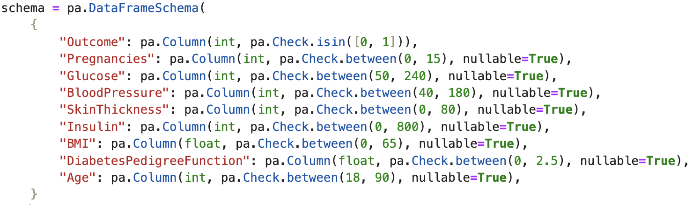
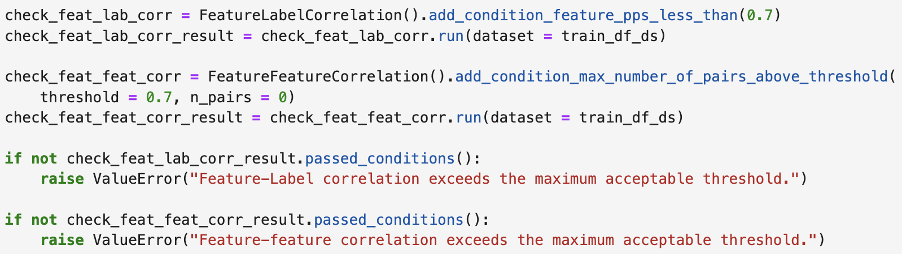

Group 15 522 Project
Dataset - Class Imbalance
- The dataset is imbalanced, with significantly more non-diabetic cases.
- 268 out of 768 patients (~35%) have diabetes, while 500 (~65%) do not.
- This imbalance can impact model training, leading to:
- A bias toward predicting non-diabetic cases.
- Potential higher false negatives (misclassifying diabetic patients as non-diabetic).

Data Validation - Pandera

- Ensures data integrity: Free of outliers & invalid values
- Based on medically plausible values:
- Glucose & Blood Pressure can’t be 0 if person is alive

Data Validation - Deepchecks


Correlations close to standard multicollinearity threshold of 0.7
Use Deepchecks to ensure no multicollinearity is occuring
Results - Feature Importance
- Feature importance measured by coefficients

Results - Confusion Matrix
217 total test cases
54 misclassifications
41 false negatives
13 false positives

Results - PR and ROC Curve
- Model performance does not achieve optimal trade-off across all thresholds.


Results - Clinical Utility
- Visualizing predicted probabilities to help clinicians assess model confidence.